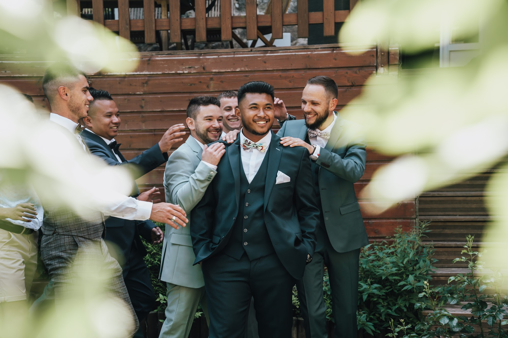

Capturing Team Memories with Professional Photo and Video Coverage
Corporate retreats and cohesion days offer a rare opportunity to connect away from daily office routines. As an experienced team building photographer near Lyon, France, I document these meaningful moments through authentic, editorial-style imagery that celebrates your company's spirit.

Why Invest in Professional Event Coverage
A team retreat is a significant investment designed to strengthen bonds and boost morale. Capturing genuine interactions—shared laughs, strategic brain-storming, and celebratory toasts—creates a lasting visual legacy for your organization.
Candid photographs capture the true pulse of your company culture far better than staged portraits. They serve as a powerful internal communication tool that reminds everyone of the shared journey and achievements.

The Approach of a Team Building Photographer in Lyon, France
My method relies on discretion and natural light. By blending into the background, I preserve the spontaneous flow of your activities, whether you are hosting an outdoor challenge in the Beaujolais vineyards or a workshop in downtown Lyon.
I focus on subtle details: intense concentration during a problem-solving challenge, spontaneous high-fives, and relaxed conversations over dinner. This documentarian approach produces elegant, human-centered imagery.

Enhancing Employer Branding with Video and Photos
High-quality visuals are essential for attracting top talent. Displaying real photos and dynamic highlight videos on your careers page or LinkedIn profile gives prospective candidates an authentic glimpse into your workplace environment.
Combining photography with a short recap video creates a multi-sensory story that boosts engagement across all your corporate communications channels.
Long-Lasting Visual Assets for Your Business

The images delivered after your event continue to bring value long after the seminar ends. From internal newsletters and office wall art to annual reports and recruitment campaigns, professional photos keep the positive momentum alive.
Every deliverable is crafted with care, ensuring a polished look that aligns perfectly with your brand identity.
Frequently asked questions
How far in advance should we book a team building photographer in Lyon, France?
It is best to reach out as soon as your event date and venue are confirmed, especially during peak retreat seasons in spring and autumn.
Do you offer combined photo and video coverage for corporate retreats?
Yes, I provide comprehensive packages that include both documentary photography and highlight video coverage tailored to your schedule.
What is the turnaround time for the photo gallery and event highlight video?
Edited high-resolution photos and video edits are typically delivered within one to two weeks via a private online gallery.
Are you available for corporate events outside of Lyon?
Yes, I regularly cover events throughout the Auvergne-Rhône-Alpes region, including Annecy, Geneva, and Paris, as well as international destinations.
Let's discuss your upcoming company event and create lasting visual memories for your team.
Let’s talk about your project